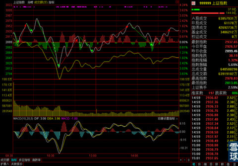
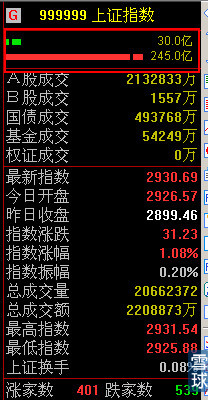
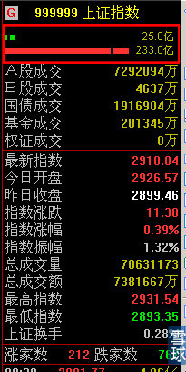
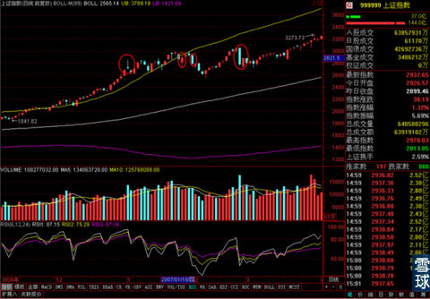

昨天提醒过大家日线RSI已经接近顶格之后，预计今天市场应该是降低一定涨速，进入一个相对横盘的情况。虽然我猜到了结局，但是打死我也猜不到这样的过程，太，太怎么说呢？不靠谱，还是太诡异？我也不知道该用什么词了。

总之现在一来还没有V字反转出现，二来疯狂的涨速毕竟是降下来了。同时大多数投资者也提心吊胆起来了。昨天解题发挥讲了一下市场主力到底是一群什么人？他们到底有多大能力和目的。就是为了等到大盘出现这种极端情况的时候，大家才能体会出来。这样的走势，谁敢说没有人为制造的痕迹？谁再说中国股市没有庄家或是市场主力简直就是不开窍啊！今年上半年我这个省的地方证监局就针对大小非，大小限解禁之后，大股东减持造成一些股票持股集中度过高的情况，要求各级证券营业部做好相应的监管配合。
前几天吴晓波在文章中也提到了，现在市场中的“新庄家”。
所以这种大范围和大幅度调动市场情况的情况绝非市场正常走势。


看下上午一段时间的涨跌家数，和红色方框里的多空阵线，完全异常。
加上昨天晚上关于银行理财资金入市这条消息的解读也是个过山车，先是说理财资金要进股市，后来有辟谣说没有的事。结果今天盘面也是超级过山车。
说以上这些，要说明的是两点问题，
第一，现在的牛市是市场主力有备而来，准备了这么久，不会打一枪就彻底离场。牛市的幅度可能会远超我们想象。
第二，操作难度极大，市场主力这样大动作的凶悍洗盘，在即使知道整体趋势的情况下，几乎没有人在心理上能承受类似今天的剧烈波动。
但是好在这样的事情不是第一次发生，在998启动之后，单日巨幅波动和超级大阴线也是多次出现。观察一下这些对我们看待现在的大盘有一定好处。

注意图中第四条，单日暴跌8%，为什么有人会说牛市不比熊市好赚钱，脑神经没有钢丝一样的强度，根本承受不了这样的市场变动。
所以记住今天的标题，经历就是财富，不要急于在一次牛市中完成毕其功于一役的大幅收益，我们一生还会经历很多牛市。记住这次牛市都发生了什么和怎么走的，下次和再下次才能顺利把握机会。这次就拿出一种当作演习的心态来吧。
晚上朋友要来家里做客，我的出去买食材回来做饭。所以今天才写一点。
大家也先回回神，周末心情平静下来之后，我会在专栏里写一下这周的总结和一些操作上应该如何应对和调整的内容。
如果今天的菜做得成功的话，再贴两张照片给大家看。
周末愉快！
 |
昨天提醒过大家日线RSI已经接近SaiLv 2014-12-05 21:27:09 |
Copyright © 1996-2014 SINA Corporation All Rights Reserved.